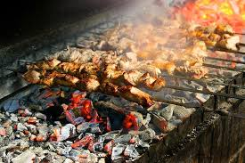

საქართველო მსოფლიოს 232 ქვეყნიდან, 69 700 კმ² ფართობით, 121-ე ადგილს იკავებს. მიუხედავად ამისა, საზოგადოების ნაწილი დღემდე თვლის, რომ სხვა ობიექტურ მიზეზებთან ერთად, ჩვენი ქვეყნის ერთ-ერთი მთავარი პრობლემა მისი პატარა ფართობია. რა თქმა უნდა, დიდი ტერიტორია და შესაბამისად გაცილებით მეტი ბუნებრივი რესურსი, ქვეყნის წარმატებასა და განვითარებაში საკმაოდ დიდ როლს ასრულებს, თუმცა ეს სულაც არაა ერთადერთი ფაქტორი. დღეს კი სწორედ იმ ქვეყნებზე მოგიყვებით, რომლებიც საქართველოზე გაცილებით პატარა, მაგრამ ეკონომიკური განვითარებითა და ცხოვრების დონით, საკმაოდ წარმატებულები არიან.
.png)
მწვადი — კავკასიელ და აზიელ ხალხთა კერძი. ტრადიციულად მზადდება ბატკნის ან ღორის ხორცისგან ლითონის ან ხის შამფურებზე. ამ კერძის მომზადებას დიდი ისტორია აქვს. მწვადი ერთ-ერთ ყველაზე ადრეულ თერმულად დამუშავებულ კერძად ითვლება. ადამიანისთვის ნაცარ-ნაღვერდალში ხორცის შეწვა შედარებით მარტივ ხერხს წარმოადგენს და აქედან გამომდინარე მწვადს თითქმის ყველა ქვეყანაში აქვს ანალოგი და ყველა ერი თავის ეროვნულ კერძებს შორის ასახელებს, თუმცა ამის მიუხედავად ის კავკასიელი და აზიელი ხალხის ტრადიციულ კერძადაა მიჩნეული.
.png)